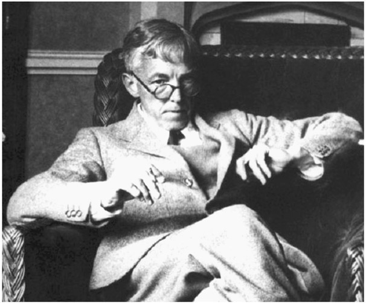
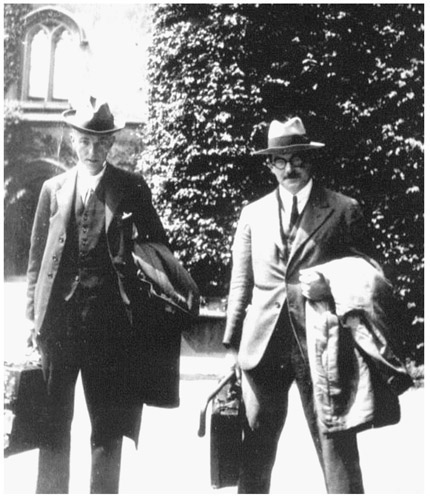
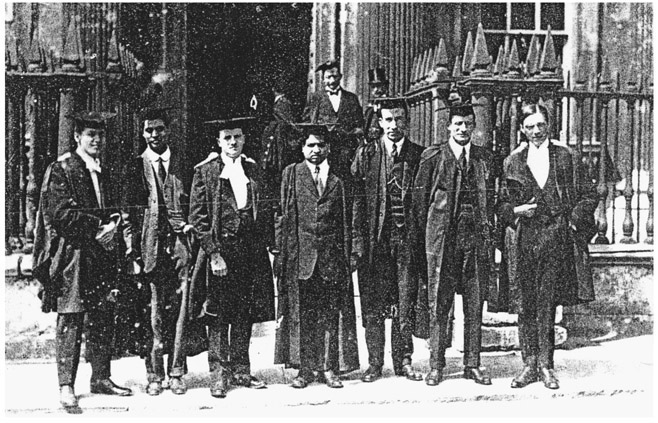
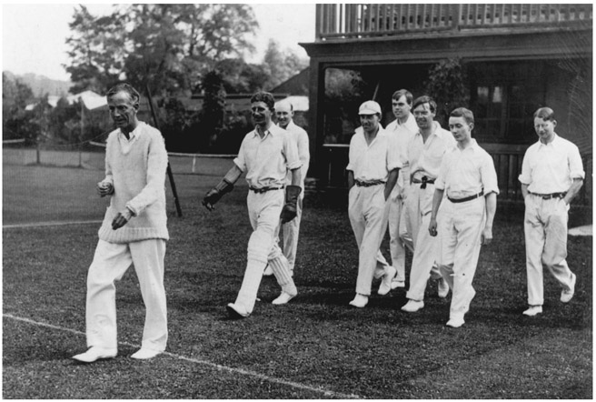

G. H. Hardy: English (1877–1947)
In today’s technical world, mathematics is seen as the key to advancement, which means that mathematics is being received and appreciated for its usefulness not only in the sciences and in computer science, but also in finance and other logic-based fields. As a result, the curricula in many schools today, which should show mathematics through its power and beauty, focuses largely on the former and not so much on the latter. England’s most famous mathematician of the twentieth century, G. H. Hardy spent his life championing the notion that mathematics should be appreciated for its beauty, and not necessarily for its usefulness, although some of his research has applied mathematics to solve problems in fields such as genetics. As a matter of fact, in 1940, he wrote an essay on the aesthetics of mathematics, which is still available today as a book titled A Mathematician’s Apology, where he tries to give the layman insights into the mind of a mathematician. The overarching theme is that mathematics should be appreciated for its own beauty, rather than for its usefulness to solve problems in other fields. Thus, he enthusiastically pursued studying pure mathematics as opposed to applied mathematics, where the latter was an abhorrence to him, especially when it was applied to military strategies and maneuvers.
Godfrey Harold Hardy was born on February 7, 1877, in Cranleigh, Surrey, England, to parents who were both educators and with a special talent in mathematics. Unfortunately, because of a lack of funding, they were not able to afford a university education. Perhaps somewhat motivated by his parents, Hardy showed early signs of mathematical talent when at the age of two he was able to write the sequence of numbers from 1 to 1,000,000. He went to school in his hometown up to age 12, and in 1889 won a scholarship to Winchester College, Winchester, England. This college was considered at the time to offer the best training in mathematics in England; however, Hardy found nothing enjoyable there beyond the academic training. Hardy was relatively frail and shy as compared to his colleagues and found beating them in mathematics gave him some posture. In 1896, Hardy entered Trinity College, Cambridge University on a scholarship. At the start he was assigned to Robert Rumsey Webb (1850–1936) as his coach, who seemed more interested in showing him how to pass examinations than to make the subject of mathematics interesting and exciting. As he was contemplating a change of subject interest to history, he had the good fortune of having a new coach, A. E. H. Love, who guided him to read material that once again rekindled his interest in mathematics. In later years, Hardy claims that Camille Jordan’s (1838–1922) book, Cours d’analyse, had a lasting effect on him and defined for him what mathematics really meant.

Figure 41.1. G. H. Hardy.
In 1898, Hardy graduated as the fourth-highest level mathematics student from Cambridge University’s graduating class, which disappointed him greatly, because he thought he should be at the top of the graduating class. Yet in 1900, he was elected a fellow of Trinity College, and then the following year was awarded Smith’s Prize for Excellence in Mathematics. Over the next decade, he wrote many professional papers on the convergence of series and integrals and other allied topics. However, his most distinctive work during this period was in 1908 where he published A Course of Pure Mathematics, which was the first rigorous English exposition of number, functions, limits, etc. This book was aimed at the undergraduate population and was a major transformation of the curriculum to that point. Hardy was very modest about his work and in retrospect in later years, he was not too enchanted with his mathematics production during that time.
In 1911, Hardy began to collaborate with John E. Littlewood (1885–1977), which was to be a relationship that lasted 35 years. They worked on mathematical analysis and analytical number theory. They were involved in grappling with Waring’s problem, which states that a natural number n has an associated positive integer k, such that every natural number is the sum of the at most k natural numbers to the power of n. For example, every natural number is the sum of at most 4 squares, 9 cubes, or 19 fourth powers. The problem was posed by the British mathematician Edward Waring (1736–1798) in 1770 and was proved to be true by David Hilbert in 1909. It served as the basis for further investigations by Hardy and Littlewood, who further made a number of conjectures.

Figure 41.2. Hardy and Littlewood in 1924.
One of their conjectures dealt with twin prime numbers, which are prime-number pairs that are consecutive odd prime numbers, for example, 5 and 7 are twin primes, as are 41 and 43. They took this a step further to investigate sequences of primes with a common difference between them. Another of their conjectures concerns the number of primes in intervals. The conjecture states that π (x + y) ≤ π (x)+π (y), where π (x) represents the number of prime numbers less than or equal to the real number x. For example, π (2) = 1, since there is only one prime number less than or equal to 2—namely, 2 itself. Thus, the conjecture implies that π (y + 2) ≤1+π (y) , or π (y + 2)−π (y) ≤1, meaning that the number of primes greater than y and less than or equal to y + 2 is at most 1. This is correct because at most one of two consecutive numbers can be prime. However, the conjecture even states that π (x + y)−π (x) ≤ π (y), which means that the number of primes greater than π (x) and less than or equal to π (x + y) is not larger than the number of primes between 1 and y. In other words, the number of primes among n consecutive numbers gets smaller as the starting number gets larger. Over the next several decades this collaboration between Hardy and Littlewood was considered one of the major accomplishments in the field of mathematics. Today there are seven volumes published by Oxford University Press consisting of Hardy’s collected papers,1 many of which are collaborations with Littlewood and Ramanujan, as well as with other famous mathematicians.
By 1913, life began to change for Hardy. He received a letter from the Indian mathematics enthusiast Srinivasa Ramanujan asking to obtain support with his studies. Previously, Ramanujan’s efforts to obtain support were ignored by two other eminent mathematicians, but somehow Hardy recognized the genius from the received correspondence and invited Ramanujan to visit him at Cambridge, England. This led to an important collaboration that resulted in five very significant mathematical papers. (See chap. 43 for more about this collaboration.) One example of Hardy’s collaboration with Ramanujan is known as the Hardy-Ramanujan asymptotic formula, which has broad applications in physics. This work was based on integer partitions, which are ways of writing positive integers as a sum of other integers. That is, two sums that differ only by which numbers are added to arrive at the sums are considered the two partitions of the same sum. For example, the number 4 can be partitioned in five distinctive ways: 4, 3 +1, 2 + 2, 2 + 1 + 1, 1 + 1 + 1 + 1.

Figure 41.3. Ramanujan (center) and Hardy (right).
This was roughly the time when his research partner Littlewood left Cambridge to join the Royal artillery in World War I. Hardy would have followed him, but he was rejected from military service on medical grounds. However, by 1919, relatively unhappy at Cambridge University, he took the position of Savilian Professor of Geometry at Oxford University. This began a productive stretch of time; he was once again collaborating with Little-wood, who remained at Cambridge University.
Although Hardy prided himself on concentrating on pure mathematics, he also got involved in solving problems a bit outside of the mathematical realm. One such was an issue raised by the German obstetrician Wilhelm Weinberg in 1908, which Hardy perfected to form the Hardy-Weinberg principle, and which states that allele and genotype frequencies in a population will remain constant from generation to generation in the absence of other evolutionary influences.
Although Hardy never married, he did have some relationships, yet he was a rather shy person who tried not to be the center of attention, even when he was being honored. Despite his shyness he had developed friendships with well-known mathematicians and philosophers of his day, such as Bertrand Russell, John Maynard Keynes, G. E. Moore, George Polya, and others. He was a member of several societies in his later years, such as the Cambridge Apostles and the Bloomsbury Group.
He felt that his most productive years were his young years. In his famous paper A Mathematician’s Apology, he cited other famous mathematicians whose most productive years were before age 40, such as Galois, who died at age 20; Abel, who died at 27; Ramanujan, who died at age 33; and Riemann, who died at 40. Yet he did mention exceptions such as Gauss, who published a work on differential geometry at age 50, but he claims to have done the work at age 40. (Perhaps that could account for the rule that in order to qualify for the most prestigious prize in mathematics, the Fields Medal, one cannot be older than age 40.) We should take note that the conqueror of Fermat’s Last Theorem, the British mathematician Andrew Wiles, performed this feat at age 42.
At the end of World War II in 1945, Hardy’s health began to weaken as did his creativity, and as a result he became rather depressed. Even walking became a chore for him, and he was forced to use other forms of transportation such as taxis. In mid-1947 he tried to commit suicide by taking an overdose of barbiturates. This did not take his life but made him rather ill and bedridden. He told his friends that he simply wanted to die, but he did not choose to attempt suicide again since he was not good at it. His sister looked after him in his last days and he died on December 1, 1947, in Cambridge, England.
A few weeks before he died, Hardy received the Copley Medal of the Royal Society “for his distinguished part in the development of mathematical analysis in England during the last 30 years.” It should be noted that he was seen in England as a leading figure in mathematics, as evidenced by the fact that he was president of the London Mathematical Society from 1926 to 1928 and again from 1939 to 1941. And in 1929 the society awarded him the De Morgan Medal, which was a great honor.
Throughout his life, Hardy was an atheist and loved the sport of cricket. In fact, the two loves of his life were mathematics and cricket. We mentioned his shyness, which also manifested itself in his not allowing his photograph to be taken, so there are believed to be only five photographs ever taken of him. He also despised having a mirror in his midst, and it is said that whenever he entered a hotel room with a mirror, he immediately covered it with a towel. He was very devoted to his students and expected perfection from them, yet he felt that one of his greatest contributions to mathematics was discovering Ramanujan.

Figure 41.4. Hardy leading his cricket team onto the field.
Perhaps in closing the biography of Godfrey Harold Hardy it would be appropriate to consider a quotation from his essay A Mathematician’s Apology:
I emphasised the permanence of mathematical achievement—What we do may be small, but it has a certain character of permanence; and to have produced anything of the slightest permanent interest, whether it be a copy of verses or a geometrical theorem, is to have done something utterly beyond the powers of the vast majority of men. And—In these days of conflict between ancient and modern studies, there must surely be something to be said for a study which did not begin with Pythagoras, and will not end with Einstein, but is the oldest and the youngest of all.